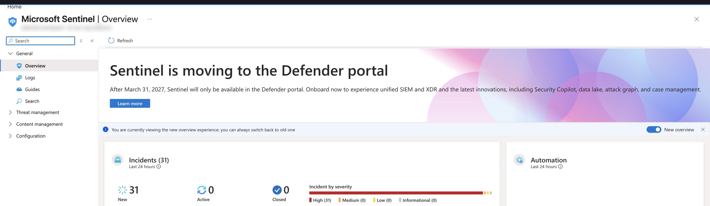
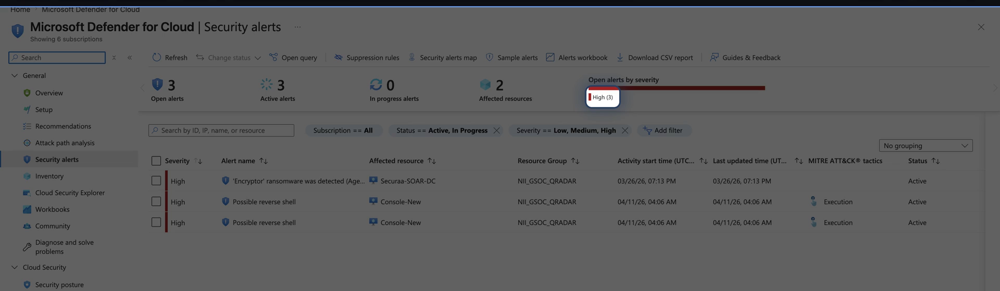
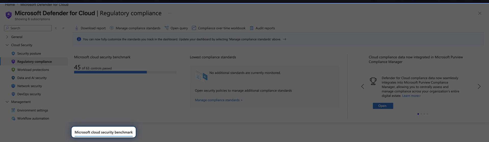

SC-100 · Domain 2 — Security Operations & Compliance
Security Operations
& Compliance
Two linked capabilities a cybersecurity architect designs: one that detects and responds across the estate, and one that proves controls hold against obligations.
DETECT → RESPOND → PROVE
Framing Domain 2NETWORK INTELLIGENCE · SC-100
Two capabilities, two questions
Design and evaluate — not portal clicks
1
Security operations
Are we under attack, and can we respond fast enough across everything we own?
+
2
Regulatory compliance
Can we prove our controls hold against the obligations imposed on us?
Both are design problems. Decide what each capability owns, which service delivers it, and where the seams sit. Console mechanics are AZ-500.
Unified security operationsNETWORK INTELLIGENCE · SC-100
XDR is deep · SIEM is broad
One platform in the Defender portal
Grounded · Microsoft Sentinel
The division of labor
Defender XDR — deep, high-fidelity detection and response across identities, endpoints, apps, and email in the Microsoft estate.
Sentinel — cloud-native SIEM + SOAR, broad across the whole estate via 350+ connectors; correlation, retention, playbooks.
After March 31, 2027 Sentinel is supported only in the Defender portal — design new on the unified model.
security.microsoft.com — Microsoft Defender · SIEM + XDR

Logging, auditing, multicloudNETWORK INTELLIGENCE · SC-100
Two planes — place them deliberately
Forensic activity vs. detection telemetry
A
Purview Audit
The unified audit log — user and admin operations for forensic, internal, and compliance investigations.
·
B
Sentinel + Log Analytics
The security-telemetry plane — detection, correlation, and long retention.
·
C
Defender for Cloud
Onboards AWS & GCP via connectors and on-prem via Azure Arc — one set of controls.
Complementary, not interchangeable. Route forensic activity through Purview Audit; route detection telemetry through Sentinel.
Workflows & MITRE ATT&CKNETWORK INTELLIGENCE · SC-100
Measure coverage — current vs. simulated
Incidents, hunting, and the coverage map
security.microsoft.com — Incidents & alerts

Grounded · XDR · Detection
From alerts to a roadmap
Alerts group into incidents carrying entities, evidence, and tagged techniques. Hunting is proactive and feeds new analytics rules.
The Sentinel MITRE ATT&CK page (preview, v18) shows current vs. simulated coverage — the gap is your detection-engineering backlog.
Match the matrix: Enterprise, Mobile, or ICS for OT.
Requirements to controlsNETWORK INTELLIGENCE · SC-100
Translate · score · audit
Compliance Manager is the translation engine
360+
regulatory templates
ISO 27001 · NIST 800-53 · GDPR · PCI DSS
3
control types
Microsoft-managed · customer · shared
1
compliance score
risk-based, rolls up improvement actions
DATA PROTECTION BASELINE INCLUDED
ASSESSMENTS PRODUCE A SCORE
IMPROVEMENT ACTIONS = REMEDIATION + EVIDENCE
MULTICLOUD · AUDIT-FACING
Priva & Azure PolicyNETWORK INTELLIGENCE · SC-100
Privacy on one side · enforcement on the other
Two tools beside Compliance Manager
P
Microsoft Priva
Privacy risk management — overexposure, transfer, minimization — and Subject Rights Requests. Not for general control mapping.
·
A
Azure Policy
Regulatory-compliance built-in initiatives map controls to policy definitions, evaluated continuously with audit/deny effects.
Caveat: "Compliant" in Azure Policy refers only to the policies — rarely one-to-one with controls. A partial view, not full regulatory proof.
Defender for Cloud complianceNETWORK INTELLIGENCE · SC-100
Evaluate & validate alignment
Standards measured across Azure, AWS, GCP
Grounded · Regulatory compliance
The prescriptive control lens
The dashboard presents standards assessed continuously across Azure subscriptions, AWS accounts, and GCP projects. MCSB is assigned by default.
Controls map to assessments; grayed-out controls are manual or platform-responsibility — satisfied by attestation with evidence.
MCSB here = prescriptive benchmark; Compliance Manager = regulation-mapped audit scoring.
portal.azure.com — Defender for Cloud · Regulatory compliance

RememberNETWORK INTELLIGENCE · SC-100
Security Operations & Compliance in five rules
Detect, respond, prove
- 1 · XDR is deep in the Microsoft estate; Sentinel is broad and owns SIEM + SOAR — unified Defender portal is the target.
- 2 · Keep logging planes separate: Purview Audit for forensics, Sentinel for detection telemetry.
- 3 · Use MITRE ATT&CK to measure coverage — current vs. simulated — and match the matrix to the estate.
- 4 · Compliance Manager translates & scores · Priva owns privacy · Azure Policy enforces · Defender for Cloud evaluates.
- 5 · Azure Policy "compliant" is a partial view, never full regulatory proof.
Hands-on · 1 of 2NETWORK INTELLIGENCE · SC-100
Do this
Draw your XDR/SIEM seam
GOAL · One diagram of the seam + a ranked detection backlog
- Place Defender XDR over identities, endpoints, apps, and email; place Sentinel over everything else — correlation, retention, SOAR.
- Show incidents syncing into the unified Defender portal; mark which detections you would author as unified custom detections.
- Read MITRE coverage as a gap map: compare current vs. simulated and list the three highest-value unconfigured techniques.
✓ DONE WHEN · You have the seam diagram and a ranked detection-engineering backlog
Hands-on · 2 of 2NETWORK INTELLIGENCE · SC-100
Do this
Trace one requirement end to end
GOAL · One clause traced through all three compliance tools
- Pick a single regulatory clause — an encryption-at-rest control works well.
- Map it to a Compliance Manager improvement action (translate + evidence), then an Azure Policy built-in (enforce + assess).
- Map it to the matching Defender for Cloud control that evaluates it across Azure, AWS, and GCP.
✓ DONE WHEN · One clause is traced through all three tools — Domain 2 compliance design in miniature